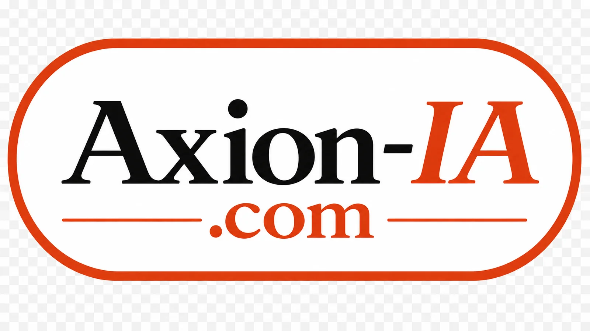

17 formations intra-entreprise, un coaching dirigeant en tête-à-tête et 4 formats d’audit. Sur site, sur vos vrais cas — pas de théorie hors-sol.

La plupart des formations IA laissent les équipes avec des concepts. Nous, on repart de vos vraies tâches : chaque participant produit dès la séance, sur ses propres dossiers, et l’entreprise garde un actif — gabarits, chartes, kits, outils configurés, code source.
17 programmes intra-entreprise, 3 gammes, de 4 h à 3 jours. Dès 1 200 € HT / groupe.
Dirigeant ou collaborateur clé, une journée en tête-à-tête. Dès 990 € HT / jour.
4 formats, de la journée sur site (1 190 € HT, livrables sous 48 h) à l’audit stratégique board-ready.
Vos équipes montent en compétence sur leurs vraies tâches, dans vos locaux. 17 programmes, 3 gammes, sans prérequis (sauf mention).
Un accompagnement en tête-à-tête, sur site, pour un dirigeant ou un collaborateur clé. Format AFEST (formation en situation de travail).
Un diagnostic clair de ce que l’IA peut vous rapporter, avec un plan d’action chiffré. De la journée sur site à l’audit stratégique board-ready.
En tant qu’organisme de formation certifié Qualiopi, nos actions de formation sont prises en charge par les OPCO. Selon votre branche professionnelle et votre solde disponible, le reste à charge peut être nul.
Un échange de 15 minutes suffit pour identifier la formule adaptée et lancer le financement.
Nos formations et audits s’adaptent à votre métier : on part de vos vrais cas, quel que soit votre secteur. TPE, PME, ETI et grandes entreprises.
BTP, santé, immobilier, expertise comptable, hôtellerie-restauration, industrie, juridique, transport-logistique, collectivités, commerce : des cas d’usage prêts à l’emploi par secteur.
De l’artisan et la TPE (2-15 personnes) à l’ETI et la grande entreprise (jusqu’à 30 par session, groupe ≤ 12 pour les gammes avancées).
4 heures pour que toute votre équipe travaille avec l’IA, dès demain.
Tous postes mélangés (bureau, terrain, commercial, atelier, accueil), managers et dirigeants. Aucun profil technique requis.
4 h investies par salarié → 30 à 60 min gagnées par jour dès la semaine suivante. Rentabilisée en moins de 2 semaines.
Présentiel dans vos locaux — distanciel possible. Pédagogie active, quiz de clôture, attestation. Accessible aux situations de handicap (référent dédié).
Vos équipes utilisent déjà l’IA mais les résultats sont moyens ? La compétence qui change tout.
Salariés qui pratiquent déjà l’IA et plafonnent : résultats génériques, reprises multiples, outil sous-exploité.
4 h investies → chaque tâche IA existante faite 2 à 3× plus vite. Rentabilisée en 1 à 2 semaines.
Présentiel dans vos locaux — distanciel possible. Pédagogie active, quiz de clôture, attestation. Accessible aux situations de handicap (référent dédié).
Vos salariés utilisent déjà l’IA. Apprenez-leur à le faire sans risque pour l’entreprise.
Tout salarié qui utilise l’IA ou s’apprête à le faire, ainsi que dirigeants, DSI et référents.
Un seul incident évité (fuite de données, doc confidentiel dans un outil public) vaut des dizaines de fois le coût. Une assurance au prix d’une demi-journée.
Présentiel dans vos locaux — distanciel possible. Pédagogie active, quiz de clôture, attestation. Accessible aux situations de handicap (référent dédié).
Vos obligations d’employeur quand vos équipes utilisent l’IA — l’AI Act transformé en feuille de route.
Dirigeants, DRH/RH, managers, référents IA, DPO et responsables conformité de TPE, PME et ETI.
4 livrables de conformité construits en séance (cartographie, registre, plan 90 jours, communication), qui auraient coûté plusieurs jours de conseil.
Présentiel dans vos locaux — distanciel possible. Pédagogie active, quiz de clôture, attestation. Accessible aux situations de handicap (référent dédié).
Une journée pour passer toute l’équipe de débutant à autonome.
Tout salarié de tous services, managers, dirigeants, professions libérales et indépendants.
~1 h gagnée par jour et par salarié. Sur une équipe de 8, l’équivalent d’un temps plein récupéré chaque mois.
Présentiel dans vos locaux — distanciel possible. Pédagogie active, quiz de clôture, attestation. Accessible aux situations de handicap (référent dédié).
Devis, propositions, relances : répondre plus vite et mieux que vos concurrents.
Commerciaux, ADV, assistants commerciaux, SAV, responsables commerciaux et dirigeants qui vendent (B2B/B2C).
Des propositions 2 à 3× plus rapides. Un seul devis signé en plus rembourse la formation ; le reste de l’année est du gain net.
Présentiel dans vos locaux — distanciel possible. Pédagogie active, quiz de clôture, attestation. Accessible aux situations de handicap (référent dédié).
Documents, courriers, dossiers : produire deux fois plus vite.
Assistant(e)s, secrétariat, gestion, comptabilité/paie, RH, ADV, services généraux, chefs de projet.
1 à 2 h gagnées par jour sur les postes administratifs. Rentabilisée en ~10 jours ouvrés.
Présentiel dans vos locaux — distanciel possible. Pédagogie active, quiz de clôture, attestation. Accessible aux situations de handicap (référent dédié).
Comptes rendus, photos, dictée vocale : tout depuis son téléphone.
Techniciens, ouvriers, chauffeurs, agents d’exploitation, personnel d’atelier, installateurs, maintenance.
30 à 45 min de paperasse en moins par jour et par personne, et des heures de ressaisie économisées au bureau.
Présentiel dans vos locaux — distanciel possible. Pédagogie active, quiz de clôture, attestation. Accessible aux situations de handicap (référent dédié).
Une journée pour voir ce que l’automatisation peut faire pour votre entreprise.
Tout salarié et encadrement, dirigeants invités à la restitution finale, de la TPE à l’ETI.
Un plan d’automatisation chiffré qui aurait coûté plusieurs jours de conseil — et chaque mauvais investissement évité vaut bien plus que la journée.
Présentiel dans vos locaux — distanciel possible. Pédagogie active, quiz de clôture, attestation. Accessible aux situations de handicap (référent dédié).
Vos 5 tâches les plus chronophages transformées avant la fin de la formation.
Tout salarié, idéalement en équipes constituées, managers et responsables d’équipe.
Les 5 tâches les plus lourdes de chaque participant accélérées de 50 à 80 %, dès le retour au poste. Gains permanents.
Présentiel dans vos locaux — distanciel possible. Pédagogie active, quiz de clôture, attestation. Accessible aux situations de handicap (référent dédié).
Tout le cycle de vente passé à l’IA : de la prospection à la signature.
Commerciaux confirmés, responsables/directeurs commerciaux, ADV impliquée dans les offres, dirigeants.
Capacité de prospection et de réponse multipliée à effectif constant. Une seule affaire gagnée rembourse la formation plusieurs fois.
Présentiel dans vos locaux — distanciel possible. Pédagogie active, quiz de clôture, attestation. Accessible aux situations de handicap (référent dédié).
Vos processus passés à l’IA, des référents formés, une équipe autonome.
Équipe constituée avec 1-2 référents volontaires ; direction présente à la restitution finale.
Des processus accélérés en permanence, des référents qui forment les nouveaux, des abonnements inutiles résiliés. L’investissement le plus durable du catalogue.
Présentiel dans vos locaux — distanciel possible. Pédagogie active, quiz de clôture, attestation. Accessible aux situations de handicap (référent dédié).
Créez vos propres automatisations IA, sans savoir coder. Le code reste à l’entreprise.
Tout salarié sans connaissance en programmation qui veut créer ses automatisations. L’IA écrit le code en clair.
Chaque automatisation fait gagner de 15 min à plusieurs heures par jour, sans coût récurrent. Une tâche quotidienne de 30 min = +100 h/an par participant.
Présentiel dans vos locaux — distanciel possible. Pédagogie active, quiz de clôture, attestation. Accessible aux situations de handicap (référent dédié).
Chacun construit ET déploie son automatisation complète — en fonctionnement le dernier jour.
Salariés ayant suivi le niveau 2 jours, qui veulent déployer des automatisations robustes en production.
Des automatisations robustes qui tournent sans surveillance, et la capacité d’en créer chaque mois — chacune aurait coûté plusieurs milliers d’euros en développement externe.
Présentiel dans vos locaux — distanciel possible. Pédagogie active, quiz de clôture, attestation. Accessible aux situations de handicap (référent dédié).
Découvrir Claude et tout ce qu’il rend possible — par un formateur certifié.
Tout salarié curieux de l’écosystème Claude (Anthropic), dirigeants et décideurs qui veulent évaluer avant d’investir.
~1 h gagnée par jour et par salarié sur le travail documentaire, avec moins de reprises. Rentabilisée en moins de 2 semaines.
Présentiel dans vos locaux — distanciel possible. Pédagogie active, quiz de clôture, attestation. Accessible aux situations de handicap (référent dédié).
Chaque participant construit son propre outil IA pour son activité — et repart avec.
Tout salarié qui veut construire son assistant Claude sur ses vrais dossiers. Formateur certifié.
L’assistant configuré supprime la remise en contexte : les tâches récurrentes passent de 30 min à 5 min. Un actif qui reste dans l’entreprise.
Présentiel dans vos locaux — distanciel possible. Pédagogie active, quiz de clôture, attestation. Accessible aux situations de handicap (référent dédié).
Son outil IA complet — assistant, automatisations, espaces de travail — opérationnel le dernier jour.
Salariés avec un usage régulier de Claude, qui veulent connecter leur outil à leurs flux réels et le faire évoluer seuls.
Un outil complet par participant, qui aurait coûté plusieurs milliers d’euros développé pour lui — et qu’il sait faire évoluer seul. L’actif reste, le gain se cumule.
Présentiel dans vos locaux — distanciel possible. Pédagogie active, quiz de clôture, attestation. Accessible aux situations de handicap (référent dédié).
Une journée en tête-à-tête pour ouvrir les yeux du dirigeant sur les opportunités IA de son secteur.
Dirigeants et fondateurs de TPE, PME et ETI qui veulent une lecture IA claire de leur activité, sans jargon.
Le dirigeant décide sur pièces : quoi lancer, dans quel ordre, pour quel gain. Format AFEST, éligible au financement de la formation professionnelle.
100 % personnalisé, sur site, sur les vrais dossiers de la personne. Attestation de fin. Éligible au financement de la formation.
Une journée en tête-à-tête pour faire monter un collaborateur clé en compétence sur ses propres cas.
Collaborateurs clés (bureau, opérations, support, gestion) dont on veut optimiser le poste avec l’IA et l’automatisation.
Le collaborateur repart avec ses propres tâches transformées et un plan concret. Format AFEST (formation en situation de travail), éligible au financement.
100 % personnalisé, sur site, sur les vrais dossiers de la personne. Attestation de fin. Éligible au financement de la formation.
Savoir si l’IA peut vraiment vous aider — sans engagement long. Un diagnostic complet en une journée, sur place.
TPE, artisans, commerçants et PME qui veulent un premier diagnostic IA concret et rapide.
Confidentialité totale, souveraineté des données et conformité RGPD. Un livrable directement actionnable.
Un audit IA focalisé sur un département précis (marketing, RH, ops, finance, juridique, support).
PME et ETI qui veulent transformer un département en profondeur, avec un plan chiffré.
Confidentialité totale, souveraineté des données et conformité RGPD. Un livrable directement actionnable.
Une vision IA d’entreprise chiffrée sur 12 à 24 mois, avec quick-wins déployables sous 30 jours.
PME de 20 à 250 salariés qui veulent une trajectoire IA à l’échelle de toute l’entreprise.
Confidentialité totale, souveraineté des données et conformité RGPD. Un livrable directement actionnable.
Un audit transverse multi-BU, avec gouvernance IA, livrables board-ready et accompagnement post-audit inclus.
ETI et grandes entreprises (250 à 5000+ salariés) qui structurent leur stratégie IA au niveau board.
Confidentialité totale, souveraineté des données et conformité RGPD. Un livrable directement actionnable.
Un échange de 15 minutes suffit pour identifier la bonne formule et lancer votre financement OPCO. Devis sous 24-48 h.